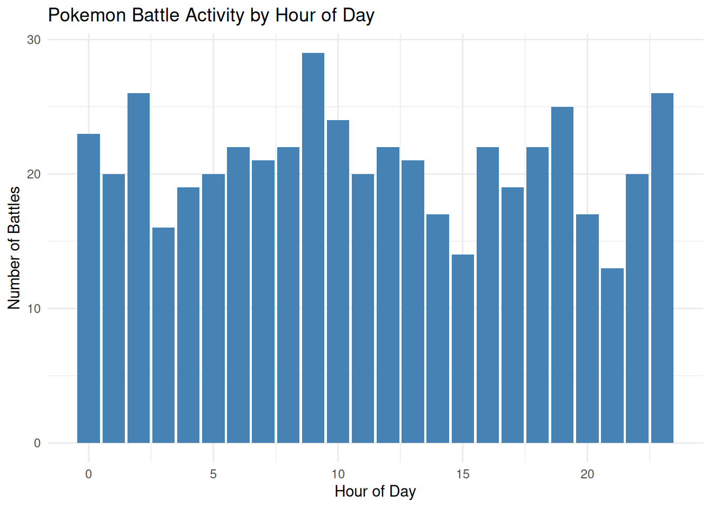
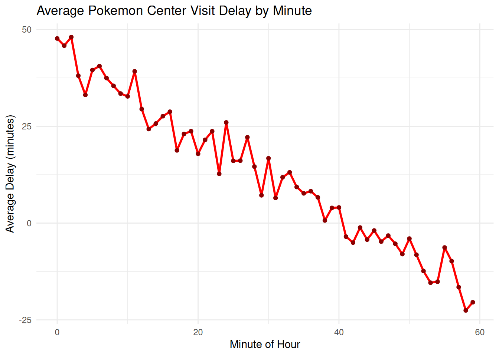
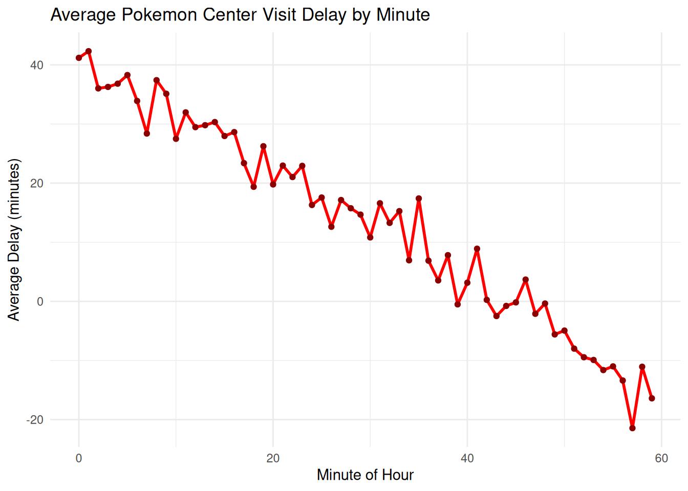
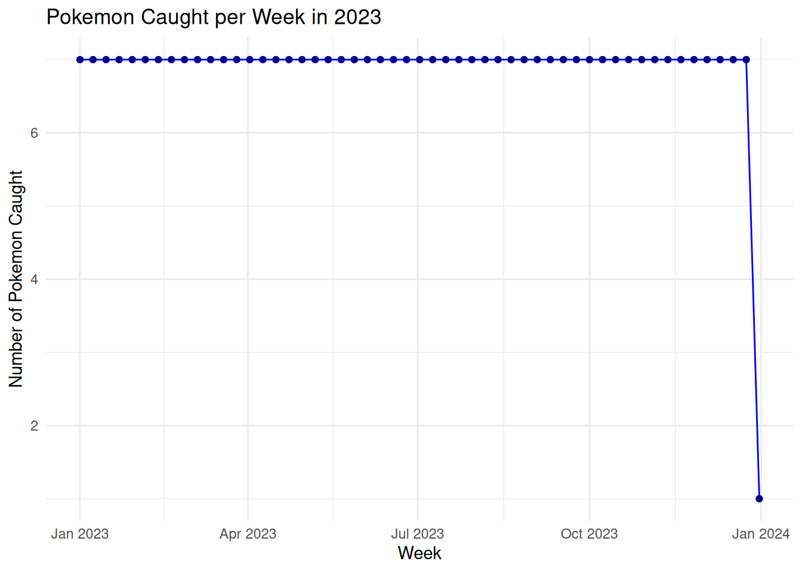
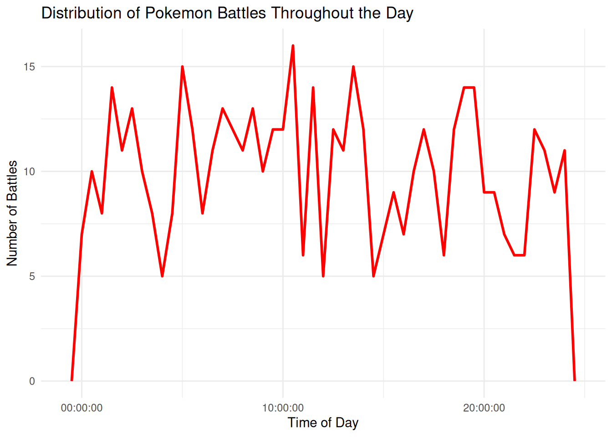

# Današnji datum
today()[1] "2026-02-07"# Trenutno datum-vrijeme
now()[1] "2026-02-07 14:28:38 CET"Rad s datumima i vremenima predstavlja jednu od ključnih vještina u analizi podataka, no istovremeno je i jedan od najsloženijih aspekata obrade podataka u R-u. Na prvi pogled datumi i vremena izgledaju jednostavno jer ih koristimo svakodnevno u običnom životu i ne čine se problem, no što dublje ulazimo u problematiku, to postaju složeniji. Datumi i vremena su teški jer moraju pomiriti dva fizička fenomena (rotaciju Zemlje i njezinu orbitu oko Sunca) s cijelim nizom geopolitičkih fenomena uključujući mjesece, vremenske zone i ljetno računanje vremena. Za rad s datumima i vremenima u R-u potrebno je razumjeti da postoje različiti tipovi podataka koji se odnose na trenutak u vremenu. Postoje tri tipa datum/ vrijeme podataka koji se odnose na trenutak u vremenu: datum, vrijeme unutar dana i datum-vrijeme koji je kombinacija datuma i vremena.
Pristup rada s datumima i vremenima usmjeren na lubridate paket koji olakšava rad s datumima i vremenima u R-u. Paket lubridate je R paket koji olakšava rad s datumima i vremenima te ima konzistentnu i lako pamtljivu sintaksu koja čini rad s datumima jednostavnim. Ovaj rad predstavlja lubridate paket za R koji olakšava rad s datumima i vremenima jer datum-vremena stvaraju različite tehničke probleme za analitičara podataka. Paket je dizajniran s ciljem rješavanja uobičajenih problema s kojima se analitičari susreću prilikom rada s vremenskim podacima.
Jedan od najvećih izazova u radu s datumima je natjerati R da se složi da podaci sadrže datume i vremena za koje mislite da ih sadrže može biti trikovno. lubridate rješava ovaj problem pružanjem intuitivnih funkcija za parsiranje različitih formata datuma i vremena te omogućava elementarne operacije poput izdvajanja komponenti datuma, aritmetike s datumima i rada s vremenskim zonama.
Postoje tri tipa datum/vrijeme podataka koji se odnose na trenutak u vremenu:
datum (<date>),
vrijeme unutar dana (<time>) i
datum-vrijeme koji je kombinacija datuma i vremena i jedinstveno identificira trenutak u vremenu (<dttm>).
U ovom je poglavlju fokus na datume i datum-vremena jer R nema osnovnu klasu za pohranu vremena, a ako trebamo raditi samo s vremenom, onda možemo koristiti paket hms. Uvijek je najbolje koristiti najjednostavniji mogući tip podataka koji odgovara trenutnim potrebama - to znači da ako možemo koristiti datum umjesto datum-vremena, to je ono što je najbolje koristiti. Datum-vremena su znatno složeniji zbog potrebe za rukovanje vremenskim zonama.
Za dobivanje trenutnog datuma ili datum-vremena mogu se koristiti funkcije today() ili now().
# Današnji datum
today()[1] "2026-02-07"# Trenutno datum-vrijeme
now()[1] "2026-02-07 14:28:38 CET"Ako CSV sadrži oznaku ISO8601 datum ili datum-vrijeme, ne morate ništa raditi - readr će ga automatski prepoznati. ISO8601 je međunarodni standard za pisanje datuma gdje su komponente datuma organizirane od najveće prema najmanjoj razdvojene crticama.
# Primjer CSV-a s Pokemon podacima
csv_pokemon <- "
name,caught_date,caught_datetime
Pikachu,2023-05-15,2023-05-15 14:30
Charizard,2023-06-02,2023-06-02 09:15
Blastoise,2023-07-20,2023-07-20 18:45
"
pokemon_data <- read_csv(csv_pokemon)Warning: The `file` argument of `vroom()` must use `I()` for literal data as of vroom
1.5.0.
# Bad:
vroom("X,Y\n1.5,2.3\n")
# Good:
vroom(I("X,Y\n1.5,2.3\n"))
ℹ The deprecated feature was likely used in the readr package.
Please report the issue at <https://github.com/tidyverse/readr/issues>.Rows: 3 Columns: 3
── Column specification ────────────────────────────────────────────────────────
Delimiter: ","
chr (1): name
dttm (1): caught_datetime
date (1): caught_date
ℹ Use `spec()` to retrieve the full column specification for this data.
ℹ Specify the column types or set `show_col_types = FALSE` to quiet this message.pokemon_data# A tibble: 3 × 3
name caught_date caught_datetime
<chr> <date> <dttm>
1 Pikachu 2023-05-15 2023-05-15 14:30:00
2 Charizard 2023-06-02 2023-06-02 09:15:00
3 Blastoise 2023-07-20 2023-07-20 18:45:00Za druge formate datum-vremena potrebno je koristiti col_types a col_date() ili col_datetime() zajedno s formatom datum-vremena. Format koristi % praćen jednim znakom za opisivanje komponente datuma.
# CSV s različitim formatima datuma
csv_pokemon_formats <- "
name,caught_date
Pikachu,15/05/23
Charizard,05-15-2023
Venusaur,2023 May 15
"
# Parsiranje različitih formata
read_csv(
csv_pokemon_formats,
col_types = cols(caught_date = col_date("%d/%m/%y"))
)Warning: One or more parsing issues, call `problems()` on your data frame for details,
e.g.:
dat <- vroom(...)
problems(dat)# A tibble: 3 × 2
name caught_date
<chr> <date>
1 Pikachu 2023-05-15
2 Charizard NA
3 Venusaur NA read_csv(
csv_pokemon_formats,
col_types = cols(caught_date = col_date("%m-%d-%Y"))
)Warning: One or more parsing issues, call `problems()` on your data frame for details,
e.g.:
dat <- vroom(...)
problems(dat)# A tibble: 3 × 2
name caught_date
<chr> <date>
1 Pikachu NA
2 Charizard 2023-05-15
3 Venusaur NA Alternativni pristup je korištenje lubridate pomoćnih funkcija koje automatski pokušavaju odrediti format kada specificirate redoslijed komponenti. Da biste ih koristili, identificirajte redoslijed u kojem se godina, mjesec i dan pojavljuju u vašim datumima, a zatim poredajte “y”, “m” i “d” u istom redoslijed.
# Različiti formati datuma
ymd("2023-05-15")[1] "2023-05-15"mdy("May 15, 2023")[1] "2023-05-15"dmy("15-May-2023")[1] "2023-05-15"# Datumi Pokemon turnira u različitim formatima
pokemon_tournament_dates <- c(
"2023-07-15",
"August 20, 2023",
"25-Sep-2023"
)
# Parsiranje različitih formata
ymd(pokemon_tournament_dates[1])[1] "2023-07-15"mdy(pokemon_tournament_dates[2])[1] "2023-08-20"dmy(pokemon_tournament_dates[3])[1] "2023-09-25"ymd() i slične funkcije stvaraju datume. Za stvaranje datum-vremena, dodajte podvlaku i jedan ili više znakova “h”, “m” i “s” na naziv funkcije za parsiranje.
# Datum-vrijeme kada je Pokemon uhvaćen
ymd_hms("2023-05-15 14:30:59")[1] "2023-05-15 14:30:59 UTC"ymd_hm("2023-05-15 14:30")[1] "2023-05-15 14:30:00 UTC"Ponekad ćete imati individualne komponente datum-vremena razmještene u više stupaca. U takvim slučajevima koristite make_date() za datume ili make_datetime() za datum-vremena.
# Simuliramo podatke o uhvaćenim Pokemonima
pokemon_catches <- data.frame(
name = c("Pikachu", "Charizard", "Blastoise", "Venusaur"),
year = c(2023, 2023, 2023, 2023),
month = c(5, 6, 7, 8),
day = c(15, 2, 20, 10),
hour = c(14, 9, 18, 11),
minute = c(30, 15, 45, 20)
)
# Stvaranje datuma
pokemon_catches$catch_date <- make_date(
pokemon_catches$year,
pokemon_catches$month,
pokemon_catches$day
)
# Stvaranje datum-vremena
pokemon_catches$catch_datetime <- make_datetime(
pokemon_catches$year,
pokemon_catches$month,
pokemon_catches$day,
pokemon_catches$hour,
pokemon_catches$minute
)
pokemon_catches name year month day hour minute catch_date catch_datetime
1 Pikachu 2023 5 15 14 30 2023-05-15 2023-05-15 14:30:00
2 Charizard 2023 6 2 9 15 2023-06-02 2023-06-02 09:15:00
3 Blastoise 2023 7 20 18 45 2023-07-20 2023-07-20 18:45:00
4 Venusaur 2023 8 10 11 20 2023-08-10 2023-08-10 11:20:00Možda ćete htjeti prebacivati između datum-vremena i datuma. To je posao funkcija as_date() i as_datetime().
# Pretvorba datum-vremena u datum
pokemon_datetime <- ymd_hms("2023-05-15 14:30:59")
as_date(pokemon_datetime)[1] "2023-05-15"# Pretvorba datuma u datum-vrijeme
pokemon_date <- ymd("2023-05-15")
as_datetime(pokemon_date)[1] "2023-05-15 UTC"Ponekad ćete dobiti datum/vremena kao numeričke pomake od “Unix Epoch”, 1970-01-01. Ako je pomak u sekundama, koristite as_datetime(), a ako je u danima, koristite as_date().
# Simuliramo da su Pokemon podaci pohranjeni kao Unix timestamp
pikachu_timestamp <- 1684159859
charizard_days <- 19510
# Pretvorba u čitljive formate
as_datetime(pikachu_timestamp)[1] "2023-05-15 14:10:59 UTC"as_date(charizard_days)[1] "2023-06-02"# Kompletniji primjer s Pokemon lovom kroz različite regije
pokemon_log <- data.frame(
trainer = c("Ash", "Misty", "Brock", "Ash", "Gary"),
pokemon = c("Pikachu", "Staryu", "Onix", "Charizard", "Blastoise"),
region = c("Kanto", "Cerulean", "Pewter", "Charicific Valley", "Pallet"),
caught_string = c("2023-04-01 08:30", "2023-04-15 16:45", "2023-05-02 12:15", "2023-06-20 19:30", "2023-07-10 14:20"),
stringsAsFactors = FALSE
)
# Parsiranje datum-vremena
pokemon_log$caught_datetime <- ymd_hm(pokemon_log$caught_string)
# Dodavanje datuma bez vremena
pokemon_log$caught_date <- as_date(pokemon_log$caught_datetime)
# Pregled rezultata
pokemon_log trainer pokemon region caught_string caught_datetime
1 Ash Pikachu Kanto 2023-04-01 08:30 2023-04-01 08:30:00
2 Misty Staryu Cerulean 2023-04-15 16:45 2023-04-15 16:45:00
3 Brock Onix Pewter 2023-05-02 12:15 2023-05-02 12:15:00
4 Ash Charizard Charicific Valley 2023-06-20 19:30 2023-06-20 19:30:00
5 Gary Blastoise Pallet 2023-07-10 14:20 2023-07-10 14:20:00
caught_date
1 2023-04-01
2 2023-04-15
3 2023-05-02
4 2023-06-20
5 2023-07-10Možete izdvojiti pojedine dijelove datuma pomoću pristupnih funkcija year(), month(), mday() (dan u mjesecu), yday() (dan u godini), wday() (dan u tjednu), hour(), minute() i second(). Ove su funkcije jednostavne za dobivanje i postavljanje komponenti datum-vremena.
# Stvaramo datum-vrijeme kada je Pikachu uhvaćen
pikachu_datetime <- ymd_hms("2023-05-15 14:30:45")
# Izdvajanje komponenti
year(pikachu_datetime)[1] 2023month(pikachu_datetime)[1] 5mday(pikachu_datetime)[1] 15yday(pikachu_datetime)[1] 135wday(pikachu_datetime)[1] 2hour(pikachu_datetime)[1] 14minute(pikachu_datetime)[1] 30second(pikachu_datetime)[1] 45Za month() i wday() možete postaviti label = TRUE da vratite skraćeni naziv mjeseca ili dana u tjednu. Postavite abbr = FALSE da vratite puni naziv.
# Datumi Pokemon turnira
pokemon_tournaments <- data.frame(
tournament = c("Indigo Plateau", "Silver Conference", "Ever Grande", "Lily of the Valley", "Vertress Conference"),
date = ymd(c("2023-03-15", "2023-06-20", "2023-09-10", "2023-11-05", "2023-12-18")),
stringsAsFactors = FALSE
)
# Dodavanje informacija o mjesecu
pokemon_tournaments$month_num <- month(pokemon_tournaments$date)
pokemon_tournaments$month_name <- month(pokemon_tournaments$date, label = TRUE)
pokemon_tournaments$month_full <- month(pokemon_tournaments$date, label = TRUE, abbr = FALSE)
# Dodavanje informacija o danu u tjednu
pokemon_tournaments$weekday <- wday(pokemon_tournaments$date, label = TRUE)
pokemon_tournaments$weekday_full <- wday(pokemon_tournaments$date, label = TRUE, abbr = FALSE)
pokemon_tournaments tournament date month_num month_name month_full weekday
1 Indigo Plateau 2023-03-15 3 Mar March Wed
2 Silver Conference 2023-06-20 6 Jun June Tue
3 Ever Grande 2023-09-10 9 Sep September Sun
4 Lily of the Valley 2023-11-05 11 Nov November Sun
5 Vertress Conference 2023-12-18 12 Dec December Mon
weekday_full
1 Wednesday
2 Tuesday
3 Sunday
4 Sunday
5 Monday# Simuliramo podatke o uhvaćenim Pokemonima
set.seed(42)
pokemon_catches <- data.frame(
pokemon = sample(c("Pikachu", "Charizard", "Blastoise", "Venusaur", "Butterfree", "Pidgeot", "Alakazam", "Machamp"), 100, replace = TRUE),
caught_datetime = ymd("2023-01-01") + days(sample(0:364, 100, replace = TRUE)) + hours(sample(0:23, 100, replace = TRUE)) + minutes(sample(0:59, 100, replace = TRUE)),
stringsAsFactors = FALSE
)
# Analiza po danima u tjednu
pokemon_catches$weekday <- wday(pokemon_catches$caught_datetime, label = TRUE, abbr = FALSE)
pokemon_by_weekday <- pokemon_catches |>
group_by(weekday) |>
summarise(
count = n(),
.groups = "drop"
) |>
arrange(weekday)
pokemon_by_weekday# A tibble: 7 × 2
weekday count
<ord> <int>
1 Sunday 13
2 Monday 13
3 Tuesday 14
4 Wednesday 14
5 Thursday 18
6 Friday 10
7 Saturday 18# Simuliramo podatke o Pokemon borbama
pokemon_battles <- data.frame(
battle_id = 1:500,
battle_time = ymd_hms("2023-06-01 00:00:00") + hours(sample(0:23, 500, replace = TRUE)) + minutes(sample(0:59, 500, replace = TRUE)),
winner = sample(c("Ash", "Gary", "Misty", "Brock"), 500, replace = TRUE),
stringsAsFactors = FALSE
)
# Izdvajanje sata
pokemon_battles$battle_hour <- hour(pokemon_battles$battle_time)
# Analiza aktivnosti po satima
battles_per_hour <- pokemon_battles |>
group_by(battle_hour) |>
summarise(
battle_count = n(),
.groups = "drop"
)
battles_per_hour# A tibble: 24 × 2
battle_hour battle_count
<int> <int>
1 0 23
2 1 20
3 2 26
4 3 16
5 4 19
6 5 20
7 6 22
8 7 21
9 8 22
10 9 29
# ℹ 14 more rowsggplot(battles_per_hour, aes(x = battle_hour, y = battle_count)) +
geom_col(fill = "steelblue") +
labs(
title = "Pokemon Battle Activity by Hour of Day",
x = "Hour of Day",
y = "Number of Battles"
) +
theme_minimal()
# Simuliramo podatke o Pokemon Gym borbama
gym_battles <- data.frame(
gym = sample(c("Pewter", "Cerulean", "Vermilion", "Celadon", "Fuchsia", "Saffron", "Cinnabar", "Viridian"), 1000, replace = TRUE),
scheduled_time = ymd_hms("2023-01-01 00:00:00") + days(sample(0:364, 1000, replace = TRUE)) + hours(sample(8:20, 1000, replace = TRUE)),
actual_delay = sample(-10:60, 1000, replace = TRUE),
stringsAsFactors = FALSE
)
# Dodavanje dana u tjednu
gym_battles$weekday <- wday(gym_battles$scheduled_time, label = TRUE)
# Analiza prosječnog kašnjenja po danima
delay_by_weekday <- gym_battles |>
group_by(weekday) |>
summarise(
avg_delay = mean(actual_delay),
n_battles = n(),
.groups = "drop"
)
delay_by_weekday# A tibble: 7 × 3
weekday avg_delay n_battles
<ord> <dbl> <int>
1 Sun 23.8 135
2 Mon 24.9 130
3 Tue 26.6 156
4 Wed 25.4 154
5 Thu 24.9 134
6 Fri 22.1 148
7 Sat 22.9 143Možemo također pogledati prosječno vrijeme po minuti unutar sata. Postoji zanimljiv uzorak: Pokemon posjeti koji se događaju u minutama 20-30 i 50-60 imaju mnogo niža kašnjenja od ostatka sata.
# Simuliramo podatke o posjetima Pokemon Centru
pokemon_center_visits <- data.frame(
trainer = sample(c("Ash", "Misty", "Brock", "Gary", "May"), 2000, replace = TRUE),
scheduled_time = ymd_hms("2023-06-01 08:00:00") + hours(rep(0:11, each = 167))[1:2000] + minutes(sample(0:59, 2000, replace = TRUE)),
actual_time = ymd_hms("2023-06-01 08:00:00") + hours(rep(0:11, each = 167))[1:2000] + minutes(sample(0:59, 2000, replace = TRUE)) + minutes(sample(-5:30, 2000, replace = TRUE)),
stringsAsFactors = FALSE
)
# Izračunavanje kašnjenja
pokemon_center_visits$delay <- as.numeric(
difftime(pokemon_center_visits$actual_time, pokemon_center_visits$scheduled_time, units = "mins")
)
# Analiza po minutama
pokemon_center_visits$minute <- minute(pokemon_center_visits$scheduled_time)
delay_by_minute <- pokemon_center_visits |>
group_by(minute) |>
summarise(
avg_delay = mean(delay),
n = n(),
.groups = "drop"
)
delay_by_minute# A tibble: 60 × 3
minute avg_delay n
<int> <dbl> <int>
1 0 47.7 29
2 1 45.8 29
3 2 48.0 25
4 3 38.1 26
5 4 33.1 35
6 5 39.5 34
7 6 40.6 29
8 7 37.5 30
9 8 35.4 49
10 9 33.5 37
# ℹ 50 more rows# Vizualizacija
ggplot(delay_by_minute, aes(x = minute, y = avg_delay)) +
geom_line(color = "red", size = 1) +
geom_point(color = "darkred") +
labs(
title = "Average Pokemon Center Visit Delay by Minute",
x = "Minute of Hour",
y = "Average Delay (minutes)"
) +
theme_minimal()Warning: Using `size` aesthetic for lines was deprecated in ggplot2 3.4.0.
ℹ Please use `linewidth` instead.
# Simuliramo podatke o posjetima Pokemon Centru
pokemon_center_visits <- data.frame(
trainer = sample(c("Ash", "Misty", "Brock", "Gary", "May"), 2000, replace = TRUE),
scheduled_time = ymd_hms("2023-06-01 08:00:00") + hours(rep(0:11, each = 167))[1:2000] + minutes(sample(0:59, 2000, replace = TRUE)),
actual_time = ymd_hms("2023-06-01 08:00:00") + hours(rep(0:11, each = 167))[1:2000] + minutes(sample(0:59, 2000, replace = TRUE)) + minutes(sample(-5:30, 2000, replace = TRUE)),
stringsAsFactors = FALSE
)
# Izračunavanje kašnjenja
pokemon_center_visits$delay <- as.numeric(
difftime(pokemon_center_visits$actual_time, pokemon_center_visits$scheduled_time, units = "mins")
)
# Analiza po minutama
pokemon_center_visits$minute <- minute(pokemon_center_visits$scheduled_time)
delay_by_minute <- pokemon_center_visits |>
group_by(minute) |>
summarise(
avg_delay = mean(delay),
n = n(),
.groups = "drop"
)
delay_by_minute# A tibble: 60 × 3
minute avg_delay n
<int> <dbl> <int>
1 0 41.2 31
2 1 42.3 28
3 2 36.0 33
4 3 36.3 40
5 4 36.8 34
6 5 38.3 35
7 6 33.9 31
8 7 28.4 36
9 8 37.4 36
10 9 35.1 34
# ℹ 50 more rows# Vizualizacija
ggplot(delay_by_minute, aes(x = minute, y = avg_delay)) +
geom_line(color = "red", size = 1) +
geom_point(color = "darkred") +
labs(
title = "Average Pokemon Center Visit Delay by Minute",
x = "Minute of Hour",
y = "Average Delay (minutes)"
) +
theme_minimal()
Zaokruživanje
Alternativni pristup crtanju individualnih komponenti je zaokruživanje datuma na obližnju vremensku jedinicu pomoću floor_date(), round_date() i ceiling_date(). Svaka funkcija prima vektor datuma za prilagodbu i zatim naziv jedinice za zaokruživanje prema dolje, prema gore ili najbližoj vrijednosti.
# Stvaramo podatke o uhvaćenim Pokemonima kroz godinu
pokemon_yearly <- data.frame(
pokemon = sample(c("Pikachu", "Charizard", "Blastoise", "Venusaur", "Gengar", "Dragonite", "Mewtwo", "Mew"), 365, replace = TRUE),
caught_date = ymd("2023-01-01") + days(0:364),
stringsAsFactors = FALSE
)
# Zaokruživanje na tjedne
pokemon_weekly <- pokemon_yearly |>
mutate(week = floor_date(caught_date, "week")) |>
count(week, name = "pokemon_count")
pokemon_weekly week pokemon_count
1 2023-01-01 7
2 2023-01-08 7
3 2023-01-15 7
4 2023-01-22 7
5 2023-01-29 7
6 2023-02-05 7
7 2023-02-12 7
8 2023-02-19 7
9 2023-02-26 7
10 2023-03-05 7
11 2023-03-12 7
12 2023-03-19 7
13 2023-03-26 7
14 2023-04-02 7
15 2023-04-09 7
16 2023-04-16 7
17 2023-04-23 7
18 2023-04-30 7
19 2023-05-07 7
20 2023-05-14 7
21 2023-05-21 7
22 2023-05-28 7
23 2023-06-04 7
24 2023-06-11 7
25 2023-06-18 7
26 2023-06-25 7
27 2023-07-02 7
28 2023-07-09 7
29 2023-07-16 7
30 2023-07-23 7
31 2023-07-30 7
32 2023-08-06 7
33 2023-08-13 7
34 2023-08-20 7
35 2023-08-27 7
36 2023-09-03 7
37 2023-09-10 7
38 2023-09-17 7
39 2023-09-24 7
40 2023-10-01 7
41 2023-10-08 7
42 2023-10-15 7
43 2023-10-22 7
44 2023-10-29 7
45 2023-11-05 7
46 2023-11-12 7
47 2023-11-19 7
48 2023-11-26 7
49 2023-12-03 7
50 2023-12-10 7
51 2023-12-17 7
52 2023-12-24 7
53 2023-12-31 1# Vizualizacija
ggplot(pokemon_weekly, aes(x = week, y = pokemon_count)) +
geom_line(color = "blue") +
geom_point(color = "darkblue") +
labs(
title = "Pokemon Caught per Week in 2023",
x = "Week",
y = "Number of Pokemon Caught"
) +
theme_minimal()
# Zaokruživanje na mjesece
pokemon_monthly <- pokemon_yearly |>
mutate(month = floor_date(caught_date, "month")) |>
count(month, name = "pokemon_count")
# Pregled
pokemon_monthly month pokemon_count
1 2023-01-01 31
2 2023-02-01 28
3 2023-03-01 31
4 2023-04-01 30
5 2023-05-01 31
6 2023-06-01 30
7 2023-07-01 31
8 2023-08-01 31
9 2023-09-01 30
10 2023-10-01 31
11 2023-11-01 30
12 2023-12-01 31Možete koristiti zaokruživanje da pokažete distribuciju aktivnosti tijekom dana izračunavanjem razlike između vremena i najranijeg trenutka tog dana.
# Analiza Pokemon borbi tijekom dana
daily_battles <- pokemon_battles |>
mutate(battle_time_from_midnight = battle_time - floor_date(battle_time, "day"))
# Ova razlika daje difftime objekt
head(daily_battles$battle_time_from_midnight)Time differences in secs
[1] 24120 0 48180 70320 76620 64920daily_battles <- daily_battles |>
mutate(battle_hour_hms = as_hms(battle_time - floor_date(battle_time, "day")))
# Vizualizacija
ggplot(daily_battles, aes(x = battle_hour_hms)) +
geom_freqpoly(binwidth = 60 * 30, color = "red", size = 1) +
labs(
title = "Distribution of Pokemon Battles Throughout the Day",
x = "Time of Day",
y = "Number of Battles"
) +
theme_minimal()
Modificiranje komponenti
Također možete koristiti svaku pristupnu funkciju za modificiranje komponenti datum-vremena. Ovo se često koristi pri čišćenju podataka koji imaju očito netočne datume.
# Podaci s greškom u godini
pokemon_data_error <- data.frame(
pokemon = c("Pikachu", "Charizard", "Blastoise"),
caught_date = ymd(c("2023-05-15", "2023-06-20", "2022-07-10")),
stringsAsFactors = FALSE
)
# Ispravljamo grešku - Blastoise je uhvaćen 2023, ne 2022
year(pokemon_data_error$caught_date[3]) <- 2023
pokemon_data_error pokemon caught_date
1 Pikachu 2023-05-15
2 Charizard 2023-06-20
3 Blastoise 2023-07-10Alternativno, umjesto modificiranja postojeće varijable, možete stvoriti novi datum-vrijeme pomoću update(). Ovo također omogućava postavljanje više vrijednosti u jednom koraku.
# Korištenje update() funkcije
pokemon_datetime <- ymd_hms("2023-05-15 14:30:45")
# Ažuriranje samo sata
update(pokemon_datetime, hour = 10)[1] "2023-05-15 10:30:45 UTC"# Ažuriranje više komponenti odjednom
update(pokemon_datetime, year = 2024, month = 1, day = 1, hour = 0)[1] "2024-01-01 00:30:45 UTC"# Turniri iz različitih godina
tournaments <- data.frame(
name = c("Indigo Plateau", "Silver Conference", "Ever Grande"),
date = ymd(c("2021-03-15", "2022-06-20", "2023-09-10")),
stringsAsFactors = FALSE
)
# Normaliziramo sve na 2023. godinu za usporedbu
tournaments$normalized_date <- update(tournaments$date, year = 2023)
tournaments name date normalized_date
1 Indigo Plateau 2021-03-15 2023-03-15
2 Silver Conference 2022-06-20 2023-06-20
3 Ever Grande 2023-09-10 2023-09-10Ako su vrijednosti prevelike, one će se prebaciti.
# Primjer prebacivanja
update(ymd("2023-01-31"), month = 2)[1] "2023-03-03"update(ymd("2023-01-31"), hour = 400)[1] "2023-02-16 16:00:00 UTC"# Praćenje Pokemon evolucija
pokemon_evolutions <- data.frame(
pokemon = c("Charmander", "Charmeleon", "Charizard"),
evolution_time = ymd_hms(c("2023-03-01 08:30:00", "2023-03-01 08:30:00", "2023-03-01 08:30:00")),
level = c(1, 16, 36),
stringsAsFactors = FALSE
)
# Ažuriramo vremena evolucije na osnovu razine
pokemon_evolutions$evolution_time[2] <- pokemon_evolutions$evolution_time[1] + days(15)
pokemon_evolutions$evolution_time[3] <- pokemon_evolutions$evolution_time[2] + days(20)
pokemon_evolutions pokemon evolution_time level
1 Charmander 2023-03-01 08:30:00 1
2 Charmeleon 2023-03-16 08:30:00 16
3 Charizard 2023-04-05 08:30:00 36Vremenski raspon
Idući dio bavljenja s datumima i vremenima je funkcioniranje aritmetika s datumima, uključujući oduzimanje, zbrajanje i dijeljenje. Ključan segment toga su vremenski rasponi: trajanja (durations) koja predstavljaju točan broj sekundi, periodi (periods) koji predstavljaju ljudske jedinice poput tjedana i mjeseci i intervali (intervals) koji predstavljaju početnu i završnu točku. Kao i uvijek najbolje je odabrati najjednostavniju strukturu podataka koja rješava problem. Ako vas zanima samo fizičko vrijeme, koristite trajanje; ako trebate dodati ljudsko vrijeme, koristite period; ako trebate saznati koliko dugo traje raspon u ljudskim jedinicama, koristite interval
U R-u, kada oduzmete dva datuma, dobivate difftime objekt koja bilježi vremenski raspon u sekundama, minutama, satima, danima ili tjednima. Ova dvosmislenost može učiniti difftime objekte pomalo bolnim za rad, stoga lubridate pruža alternativu koja uvijek koristi sekunde - trajanje koja mogu doći s gomilom praktičnih konstruktora.
# Koliko je vremena prošlo od kada je Ash dobio Pikachu-a?
ash_got_pikachu <- ymd("2023-04-01")
today_date <- ymd("2023-09-29")
pikachu_age <- today_date - ash_got_pikachu
pikachu_ageTime difference of 181 days# Pretvorba u duration
as.duration(pikachu_age)[1] "15638400s (~25.86 weeks)"# Konstruktori za trajanja
dseconds(15)[1] "15s"dminutes(10)[1] "600s (~10 minutes)"dhours(c(12, 24))[1] "43200s (~12 hours)" "86400s (~1 days)" ddays(0:5)[1] "0s" "86400s (~1 days)" "172800s (~2 days)"
[4] "259200s (~3 days)" "345600s (~4 days)" "432000s (~5 days)"dweeks(3)[1] "1814400s (~3 weeks)"dyears(1)[1] "31557600s (~1 years)"Trajanja uvijek bilježe vremenski raspon u sekundama. Veće jedinice nastaju pretvaranjem minuta, sati, dana, tjedana i godina u sekunde: 60 sekundi u minuti, 60 minuta u satu, 24 sata u danu i 7 dana u tjednu. Veće vremenske jedinice su problematičnije. Godina koristi “prosječan” broj dana u godini, tj. 365.25.
Aritmetika s trajanjima:
# Možete zbrajati i množiti trajanja
2 * dyears(1)[1] "63115200s (~2 years)"dyears(1) + dweeks(12) + dhours(15)[1] "38869200s (~1.23 years)"# Pokemon trening raspored
pokemon_training_schedule <- data.frame(
pokemon = c("Pikachu", "Charizard", "Blastoise", "Venusaur"),
daily_training = c(dhours(2), dhours(3), dhours(2.5), dhours(2)),
days_trained = c(30, 25, 28, 32),
stringsAsFactors = FALSE
)
# Izračunavanje ukupnog vremena treninga
pokemon_training_schedule$total_training <- pokemon_training_schedule$daily_training * pokemon_training_schedule$days_trained
pokemon_training_schedule pokemon daily_training days_trained total_training
1 Pikachu 7200s (~2 hours) 30 216000s (~2.5 days)
2 Charizard 10800s (~3 hours) 25 270000s (~3.12 days)
3 Blastoise 9000s (~2.5 hours) 28 252000s (~2.92 days)
4 Venusaur 7200s (~2 hours) 32 230400s (~2.67 days)# Kada će Pokemon biti spreman za borbu?
start_training <- ymd("2023-06-01")
# Dodavanje trajanja
start_training + ddays(30)[1] "2023-07-01"start_training + dweeks(4)[1] "2023-06-29"Međutim, budući da trajanja predstavljaju točan broj sekundi, ponekad možete dobiti neočekivani rezultat.
# Problem s ljetnim računanjem vremena
one_am <- ymd_hms("2023-03-12 01:00:00", tz = "America/New_York")
one_am[1] "2023-03-12 01:00:00 EST"one_am + ddays(1)[1] "2023-03-13 02:00:00 EDT"Zašto je jedan dan nakon 1 ujutro 12. ožujka, 2 ujutro 13. ožujka? Ako pažljivo pogledate datum, možda ćete primijetiti i da su se vremenske zone promijenile. 12. ožujka ima samo 23 sata jer je to kada počinje ljetno računanje vremena, pa ako dodamo puni dani vrijednosti sekundi, završavamo s različitim vremenom.
# Evolucija Pokemon na dan promjene na ljetno računanje vremena
evolution_time <- ymd_hms("2023-03-12 01:00:00", tz = "America/New_York")
# Dodavanje 1 dana kao trajanje
evolution_time + ddays(1)[1] "2023-03-13 02:00:00 EDT"# Dodavanje točno 24 sata
evolution_time + dhours(24)[1] "2023-03-13 02:00:00 EDT"Da bi se riješio ovaj problem, lubridate pruža periode. Periodi su vremenski rasponi, ali nemaju fiksnu duljinu u sekundama; umjesto toga rade s “ljudskim” vremenima, poput dana i mjeseci. To im omogućava rad na intuitivniji način.
one_am[1] "2023-03-12 01:00:00 EST"one_am + days(1)[1] "2023-03-13 01:00:00 EDT"Poput trajanja, periodi se mogu stvoriti nizom korisnih funkcija konstruktora.
seconds(15)[1] "15S"minutes(10)[1] "10M 0S"hours(c(12, 24))[1] "12H 0M 0S" "24H 0M 0S"days(7)[1] "7d 0H 0M 0S"months(1:6)[1] "1m 0d 0H 0M 0S" "2m 0d 0H 0M 0S" "3m 0d 0H 0M 0S" "4m 0d 0H 0M 0S"
[5] "5m 0d 0H 0M 0S" "6m 0d 0H 0M 0S"weeks(3)[1] "21d 0H 0M 0S"years(1)[1] "1y 0m 0d 0H 0M 0S"# Evolucijska vremena različitih Pokemon
pokemon_evolutions <- data.frame(
species = c("Bulbasaur", "Ivysaur", "Venusaur", "Charmander", "Charmeleon", "Charizard", "Squirtle", "Wartortle", "Blastoise"),
evolution_stage = c(1, 2, 3, 1, 2, 3, 1, 2, 3),
time_to_evolve = c(months(0), months(2), months(3), months(0), months(2), months(4), months(0), months(2) + weeks(2), months(3) + weeks(2)),
stringsAsFactors = FALSE
)
# Izračunavanje ukupnog vremena od početka do finalne evolucije
pokemon_evolutions |>
mutate(evolution_line = case_when(
grepl("Bulb|Ivy|Venu", species) ~ "Bulbasaur line",
grepl("Char", species) ~ "Charmander line",
grepl("Squir|Wart|Blast", species) ~ "Squirtle line"
)) |>
group_by(evolution_line) |>
summarise(
final_form = last(species),
total_time = sum(time_to_evolve),
.groups = "drop"
)# A tibble: 3 × 3
evolution_line final_form total_time
<chr> <chr> <dbl>
1 Bulbasaur line Venusaur 0
2 Charmander line Charizard 0
3 Squirtle line Blastoise 0Aritmetika s periodima:
# Zbrajanje perioda
10 * (months(6) + days(1))[1] "60m 10d 0H 0M 0S"days(50) + hours(25) + minutes(2)[1] "50d 25H 2M 0S"# Planiranje sezone Pokemon turnira
tournament_start <- ymd("2024-01-15")
# Turniri svaka 2 mjeseca
tournament_dates <- tournament_start + months(0:5) * 2
tournament_schedule <- data.frame(
tournament_number = 1:6,
date = tournament_dates,
tournament_name = c("Pewter City", "Cerulean City", "Vermilion City", "Celadon City", "Fuchsia City", "Saffron City")
)
tournament_schedule tournament_number date tournament_name
1 1 2024-01-15 Pewter City
2 2 2024-03-15 Cerulean City
3 3 2024-05-15 Vermilion City
4 4 2024-07-15 Celadon City
5 5 2024-09-15 Fuchsia City
6 6 2024-11-15 Saffron CityU usporedbi s trajanjima, periodi će vjerojatnije učiniti ono što očekujete.
# Usporedba perioda i trajanja
one_am[1] "2023-03-12 01:00:00 EST"one_am + days(1)[1] "2023-03-13 01:00:00 EDT"one_am + ddays(1)[1] "2023-03-13 02:00:00 EDT"# Simuliramo Pokemon putovanja između regija
pokemon_travels <- data.frame(
pokemon = c("Pidgeot", "Charizard", "Dragonite", "Aerodactyl"),
departure = ymd_hms(c("2023-06-15 22:30:00", "2023-06-15 23:45:00", "2023-06-15 21:15:00", "2023-06-15 23:00:00")),
arrival = ymd_hms(c("2023-06-15 02:30:00", "2023-06-15 01:20:00", "2023-06-15 03:45:00", "2023-06-15 00:30:00")),
stringsAsFactors = FALSE
)
# Ovi Pokemon su letjeli preko noći!
pokemon_travels |>
filter(arrival < departure) pokemon departure arrival
1 Pidgeot 2023-06-15 22:30:00 2023-06-15 02:30:00
2 Charizard 2023-06-15 23:45:00 2023-06-15 01:20:00
3 Dragonite 2023-06-15 21:15:00 2023-06-15 03:45:00
4 Aerodactyl 2023-06-15 23:00:00 2023-06-15 00:30:00To su noćni letovi. Koristili smo iste informacije o datumu za vrijeme odlaska i dolaska, ali ovi Pokemon su stigli sljedećeg dana. Možemo to popraviti dodavanjem days(1) vremenu dolaska svaki noćni let.
# Ispravljanje noćnih letova
pokemon_travels <- pokemon_travels |>
mutate(
overnight = arrival < departure,
arrival_fixed = if_else(overnight, arrival + days(1), arrival)
)
pokemon_travels pokemon departure arrival overnight
1 Pidgeot 2023-06-15 22:30:00 2023-06-15 02:30:00 TRUE
2 Charizard 2023-06-15 23:45:00 2023-06-15 01:20:00 TRUE
3 Dragonite 2023-06-15 21:15:00 2023-06-15 03:45:00 TRUE
4 Aerodactyl 2023-06-15 23:00:00 2023-06-15 00:30:00 TRUE
arrival_fixed
1 2023-06-16 02:30:00
2 2023-06-16 01:20:00
3 2023-06-16 03:45:00
4 2023-06-16 00:30:00# Sada svi letovi poštuju zakone fizike
pokemon_travels |>
filter(arrival_fixed < departure)[1] pokemon departure arrival overnight arrival_fixed
<0 rows> (or 0-length row.names)Što vraća dyears(1) / ddays(365)? Nije baš jedan, jer dyears() je definiran kao broj sekundi po prosječnoj godini, što je 365.25 dana.
dyears(1) / ddays(365)[1] 1.000685Što vraća years(1) / days(1)? Pa, ako je godina bila 2015, trebalo bi vratiti 365, ali ako je bila 2016, trebalo bi vratiti 366! Nema dovoljno informacija da lubridate da jasan odgovor. Umjesto toga daje procjenu.
years(1) / days(1)[1] 365.25Ako želite točnije mjerenje, morat ćete koristiti interval. Interval je par datuma početka i kraja, ili ga možete zamisliti kao trajanje s početnom točkom
# Stvaranje intervala pomoću %--% operatora
pikachu_training_start <- ymd("2023-01-01")
pikachu_training_end <- ymd("2023-12-31")
pikachu_training_interval <- pikachu_training_start %--% pikachu_training_end
pikachu_training_interval[1] 2023-01-01 UTC--2023-12-31 UTCZatim ga možete podijeliti s days() da saznate koliko dana stane u godinu.
pikachu_training_interval / days(1)[1] 364# Različiti Pokemon i njihova razdoblja treninga
pokemon_training_periods <- data.frame(
pokemon = c("Pikachu", "Charizard", "Blastoise", "Venusaur"),
start_date = ymd(c("2023-01-01", "2023-02-15", "2023-03-01", "2023-01-15")),
end_date = ymd(c("2023-06-30", "2023-08-20", "2023-09-15", "2023-12-31")),
stringsAsFactors = FALSE
)
# Stvaranje intervala
pokemon_training_periods$interval <- pokemon_training_periods$start_date %--% pokemon_training_periods$end_date
# Izračunavanje broja dana
pokemon_training_periods$days_trained <- pokemon_training_periods$interval / days(1)
# Izračunavanje broja tjedana
pokemon_training_periods$weeks_trained <- pokemon_training_periods$interval / weeks(1)
# Izračunavanje broja mjeseci (približno)
pokemon_training_periods$months_trained <- pokemon_training_periods$interval / months(1)
pokemon_training_periods pokemon start_date end_date interval days_trained
1 Pikachu 2023-01-01 2023-06-30 2023-01-01 UTC--2023-06-30 UTC 180
2 Charizard 2023-02-15 2023-08-20 2023-02-15 UTC--2023-08-20 UTC 186
3 Blastoise 2023-03-01 2023-09-15 2023-03-01 UTC--2023-09-15 UTC 198
4 Venusaur 2023-01-15 2023-12-31 2023-01-15 UTC--2023-12-31 UTC 350
weeks_trained months_trained
1 25.71429 5.966667
2 26.57143 6.161290
3 28.28571 6.466667
4 50.00000 11.516129# Pokemon koji se razvijaju na različitim razinama
pokemon_evolution_data <- data.frame(
pokemon = c("Charmander", "Charmeleon", "Bulbasaur", "Ivysaur", "Squirtle", "Wartortle"),
birth_date = ymd(c("2023-01-01", "2023-01-01", "2023-02-01", "2023-02-01", "2023-03-01", "2023-03-01")),
evolution_date = ymd(c("2023-03-15", "2023-06-20", "2023-04-10", "2023-07-01", "2023-05-15", "2023-08-30")),
stringsAsFactors = FALSE
)
# Stvaranje intervala i izračunavanje trajanja
pokemon_evolution_data <- pokemon_evolution_data |>
mutate(
growth_interval = birth_date %--% evolution_date,
days_to_evolve = growth_interval / days(1),
weeks_to_evolve = growth_interval / weeks(1),
approx_months = growth_interval / months(1)
)
pokemon_evolution_data pokemon birth_date evolution_date growth_interval
1 Charmander 2023-01-01 2023-03-15 2023-01-01 UTC--2023-03-15 UTC
2 Charmeleon 2023-01-01 2023-06-20 2023-01-01 UTC--2023-06-20 UTC
3 Bulbasaur 2023-02-01 2023-04-10 2023-02-01 UTC--2023-04-10 UTC
4 Ivysaur 2023-02-01 2023-07-01 2023-02-01 UTC--2023-07-01 UTC
5 Squirtle 2023-03-01 2023-05-15 2023-03-01 UTC--2023-05-15 UTC
6 Wartortle 2023-03-01 2023-08-30 2023-03-01 UTC--2023-08-30 UTC
days_to_evolve weeks_to_evolve approx_months
1 73 10.428571 2.451613
2 170 24.285714 5.633333
3 68 9.714286 2.300000
4 150 21.428571 5.000000
5 75 10.714286 2.451613
6 182 26.000000 5.935484# Stvaranje intervala za Pokemon turnire
pokemon_tournaments <- data.frame(
tournament_name = c("Indigo Plateau", "Silver Conference", "Ever Grande", "Lily of the Valley"),
start_date = ymd(c("2023-06-01", "2023-06-10", "2023-07-01", "2023-07-15")),
end_date = ymd(c("2023-06-15", "2023-06-25", "2023-07-10", "2023-07-30")),
stringsAsFactors = FALSE
)
# Stvaranje intervala
pokemon_tournaments$interval <- pokemon_tournaments$start_date %--% pokemon_tournaments$end_date
# Duljina turnira u danima - ISPRAVNO
pokemon_tournaments$duration_days <- pokemon_tournaments$interval / days(1)
# Duljina u tjednima
pokemon_tournaments$duration_weeks <- pokemon_tournaments$interval / weeks(1)
pokemon_tournaments tournament_name start_date end_date interval
1 Indigo Plateau 2023-06-01 2023-06-15 2023-06-01 UTC--2023-06-15 UTC
2 Silver Conference 2023-06-10 2023-06-25 2023-06-10 UTC--2023-06-25 UTC
3 Ever Grande 2023-07-01 2023-07-10 2023-07-01 UTC--2023-07-10 UTC
4 Lily of the Valley 2023-07-15 2023-07-30 2023-07-15 UTC--2023-07-30 UTC
duration_days duration_weeks
1 14 2.000000
2 15 2.142857
3 9 1.285714
4 15 2.142857# Provjera preklapanja turnira
int_overlaps(pokemon_tournaments$interval[1], pokemon_tournaments$interval[2])[1] TRUEint_overlaps(pokemon_tournaments$interval[2], pokemon_tournaments$interval[3])[1] FALSE# Provjera da li jedan interval sadrži drugi
int_overlaps(pokemon_tournaments$interval[1], pokemon_tournaments$interval[3])[1] FALSE# Početak i kraj intervala
int_start(pokemon_tournaments$interval[1])[1] "2023-06-01 UTC"int_end(pokemon_tournaments$interval[1])[1] "2023-06-15 UTC"# Pomicanje intervala za 5 dana
shifted_interval <- (int_start(pokemon_tournaments$interval[1]) + days(5)) %--% (int_end(pokemon_tournaments$interval[1]) + days(5))
shifted_interval[1] 2023-06-06 UTC--2023-06-20 UTCKako odabrati između trajanja, perioda i intervala? Kao i uvijek, odaberite najjednostavniju strukturu podataka koja rješava vaš problem. Ako vas zanima samo fizičko vrijeme, koristite trajanje; ako trebate dodati ljudsko vrijeme, koristite period; ako trebate saznati koliko dugo traje raspon u ljudskim jedinicama, koristite interval.
Razumijevanje ovih triju klasa ključno je za točno rukovanje vremenskim rasponima u analizi podataka. Trajanja su pouzdana za precizna mjerenja, periodi su intuitivni za ljudsko razumijevanje vremena, a intervali su najbolji kada trebate znati točno trajanje između dvije specifične točke u vremenu.